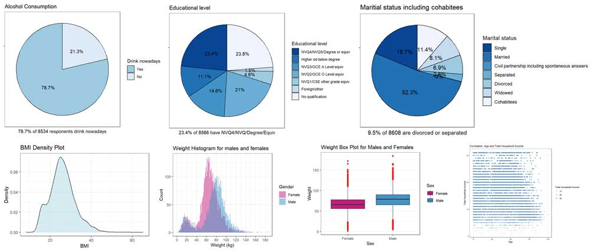

Topic
Using 2011 Health Survey for England data, provide descriptive and inferential statistics on gender and alcohol, alongside relevant literature, a discussion of findings, conclusion and recommendations. Provide code in R, a presentation and transcript (1000-1500 words).

Learning Outcomes
- Outcome 1. Built knowledge across descriptive and inferential statistics and R.
- Outcome 2. Applied descriptive and inferential statistics to dataset, considering variable types and type of test.
- Outcome 3. Critically evaluated and interpreted results, observing p-values, frequency tables, test statistics and relevant literature.
- Outcome 4. Presented results to a diverse audience using both tables containing key statistical data and graphical representation in charts and plots.
Skills
- Descriptive Statistics. Five-figure summaries (min, max, range, median, Q1, Q3), mean, mode, frequency tables, contingency tables.
- Inferential Statistics: Normality. Shapiro-Wilk, Anderson-Darling.
- Inferential Statistics: Statistical tests. Chi-squared, Mann-Whitney U, Spearman's Correlation, Cramer's V.
- Technical. GitHub, JASP, RStudio, R, SPSS data format
- R: Script. Libraries, functions, data manipulation, ggplot, statistics functions.
- R: Graphics. Pie charts, box plots, bar chart, density plot, histograms, Q-Q plots and scatterplots.
- Communication. PowerPoint presentation with audio track and transcript.
Tutor Feedback
TBC